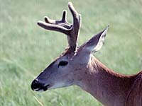

Climate
Landscape
Soil
Vegetation
Wildlife
Human Use
|
 |
Climate:
| Total annual precipitation (mm) |
450 |
| Annual snowfall (cm) |
183 |
| Water deficit (mm) |
439 |
| Mean July temperature (C) |
+16.0 |
| Mean January temperature (C) |
-12.1 |

As a result of the high elevation, the climate is sub-humid and
cool. In relation to the rest of Saskatchewan this area has relatively
mild, short winters and cool summers. The hills receive more precipitation
than the surrounding prairies and are cooler, but experience an
occasional chinook.
| |
Landscape:

The area is a flat-topped plateau, dissected into three blocks
by two river valleys. The land is low and rolling in "The
Gap" between the west and centre blocks.
|
Solid bedrock exposures
of the very porous Cypress Hills Conglomerate form dramatic cliffs
in the west block.
|
Loose cobblestones are found elsewhere.
|
![[ V F T ]](../../media/stuff/vft_spin.gif)
GPS: 49d 35.58m N, 109d 55.26m W, 3948 feet
02 August 96, 12:30 pm, Fuji Velvia 50, F11 1/4s
GPS: 49d 38.79m N, 109d 50.88m W, 4444 feet
02 August 96, 2:45 pm, Fuji Velvia 50, F15 1/10-45s
Soil:
Soils are grassland and forest types.
|
Vegetation:
Slopes of the plateau provide most of the forest habitat, with
lodgepole pine, white spruce and aspen growing in pure
or mixed stands. White spruce and some balsam poplar are common
along ravines. Fescue grass is the dominant vegetation found on
level uplands, while trembling aspen occupies the dry uplands.
Many mountain species of plants occur here. Wetland vegetation
occurs in the streams, ponds, lakes and marshes.
|
Wildlife:

Mule deer, white-tailed deer, pronghorn antelope, sage grouse,
western rattlesnake, coyote, rabbits and ground squirrels are
common in the region. Moose, elk, and the threatened "Baird's
sparrow" occur here as do the long-tailed weasel, marten,
mink, badger, bobcat and beaver. Trumpeter swans nest along
lakes in the Cypress Hills Region. This is the only place in Saskatchewan
where Townsend's solitaires and Townsend's warblers nest.
|
Human Use:

Livestock grazing and ranching are the dominant land uses
of the region. And where there is livestock there are predators. Check out the coyote sound at the top. Other main land uses are recreation, hunting and
limited forest harvesting.
|
|
|